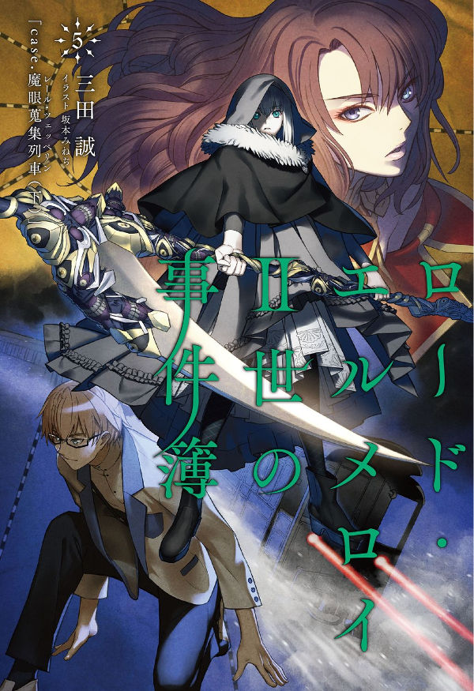
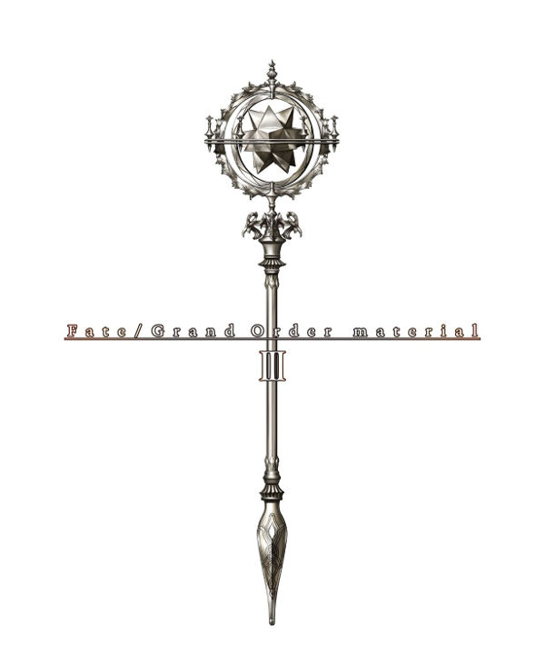
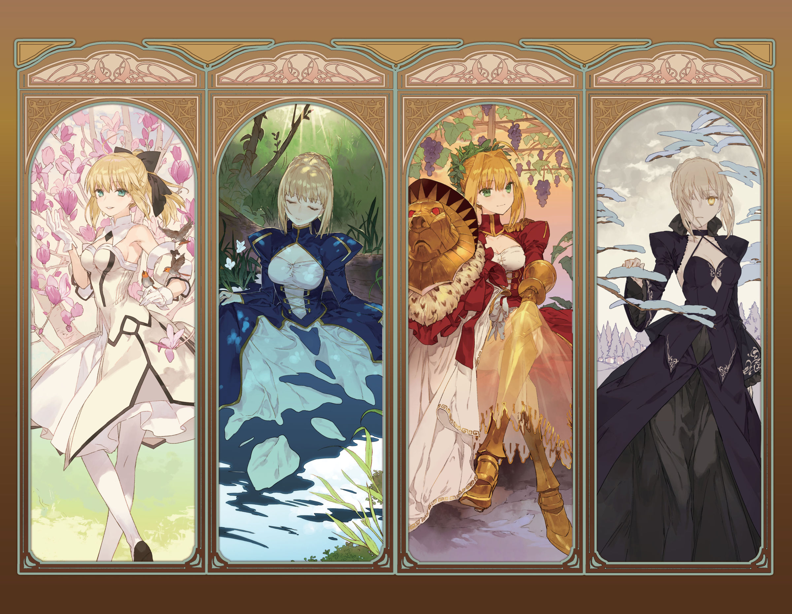

感謝使用「Fate/Grand Order」。
2016年12月6日(二)在niconico生放送配信的特別節目「Fate/Grand Order 迦勒底放送局 Vol.4 第七特異點配信前夕SP」中，發表了有關「Fate/Grand Order」的新情報。
以下介紹一部份新情報。
◆「第七特異點 絕對魔獸戰線 巴比倫尼亞」開幕！◆
主線關卡第七章「第七特異點 絕對魔獸戰線 巴比倫尼亞」的公開時間等詳細情報發表。
另外，記念第七章公開，實施七章通過應援宣傳活動。
詳情請在此處的公告確認。
※節目內先行公開的第七章電視廣告，也能在上述公告確認。
◆最終決戰開幕發表！◆
在通過主線關卡第七章後最終決戰即將開幕。
最終決戰會在2016年12月開幕，在此期間外無法參加，準備著全體Master一同擊倒敵人的特別關卡。
另外，由於最終決戰的開放上必須通過「第七特異點 絕對魔獸戰線 巴比倫尼亞」，無論如何請在開幕前通過第七章後等待。
還有，在最終決戰，Servant的絆等級有著重要的作用。
趁這機會推進喜愛的Servant的絆等級的強化吧！
關於其他詳細情報，會在接近公開時間時公告。
◆「Fate Project 除夕TV Special ～First & Next Order～」放送！◆
「Fate Project 除夕TV Special～First & Next Order～」的放送時日等的詳細發表。
【「Fate Project 除夕TV Special ～First & Next Order～」概要】
■放送日時：2016年12月31日(六) 21:00～23:00
■放送局：在TOKYO MX・群馬テレビ・とちぎテレビ・BS11全國同時放送
■配信：niconico ※與TV放送同時配信
■官方網站：http://anime.fate-go.jp/
◆「除夕TV特別記念概念禮裝獲得關卡」實施！◆
記念「Fate Project 除夕TV Special ～First & Next Order～」的放送，實施記念概念禮裝獲得關卡。
詳情請在此處的公告確認。
◆全國活動「FGO冬祭 2016 – 2017 ～達文西醬・Code～」特設網站開設！◆
在「Fate/Grand Order」首次的全國活動「FGO冬祭 2016 – 2017 ～達文西醬・Code～」中，於各會場舞台活動的出演者情報等的詳細情報。
詳情請自下述特設網站確認。
特設網站：http://www.fate-go.jp/winter/
◆廣播「Fate/Grand Order 迦勒底・廣播局」放送決定！◆
自2017年1月「Fate/Grand Order」的廣播節目「Fate/Grand Order 迦勒底・廣播局」的放送開始！
【「Fate/Grand Order 迦勒底・廣播局」 概要】
■出演：高橋李依、田中美海
■放送局：文化放送Internet Radio「超!A&G+」中影片放送(可在日本全國觀看)
地上波限定用戶的追加，30分鍾再剪輯的聲音版在文化放送地上波AM1134kHz/FM91.6MHz/radiko.jp(可在1都6縣聆聽)放送
■官方網站：http://www.joqr.co.jp/fgo/
另外，在「Fate/Grand Order 迦勒底・廣播局」放送開始之前，事前特別節目的放送決定！
【「Fate/Grand Order 迦勒底・廣播局 事前特別節目」 概要】
■出演：高橋李依、田中美海
■放送時間：2016年12月21日(三) 20:00～ 21:00
■放送局：在文化放送地上波AM1134kHz/FM91.6MHz/radiko.jp(可在1都6縣聆聽)放送
◆在Comiket91販售Fate/Grand Order相關商品！◆
在Comiket91販售「Fate/Grand Order」相關商品決定。
【TYPE-MOON攤位販售商品】
1.ロード・エルメロイⅡ世の事件簿 5巻

2.Fate/Grand Order material Ⅲ

3.2017年高級年曆
・封面由武內崇繪製
・尺寸：51cm×51cm
4.芙芙君鑰匙圈
5.「Fate/Grand Order」毛毯(繪師 pako)
・畫上瑪琇、茨木童子、南丁格爾、弗蘭肯斯坦的毛毯
・尺寸：縱850mm x 橫1100mm
※關於詳細日後會在TYPE-MOON官方首頁公告。
【Aniplex攤位販售商品】
「Fate/Grand Order」繪圖畫布（繪師 NOCO）

今後也請多多指教｢Fate/Grand Order｣。